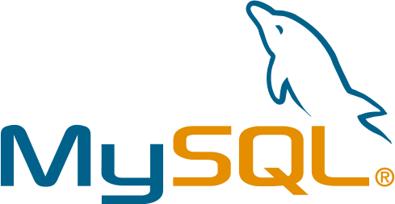
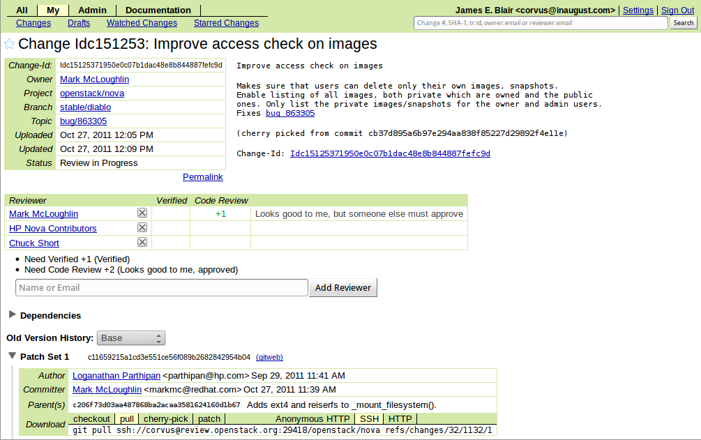
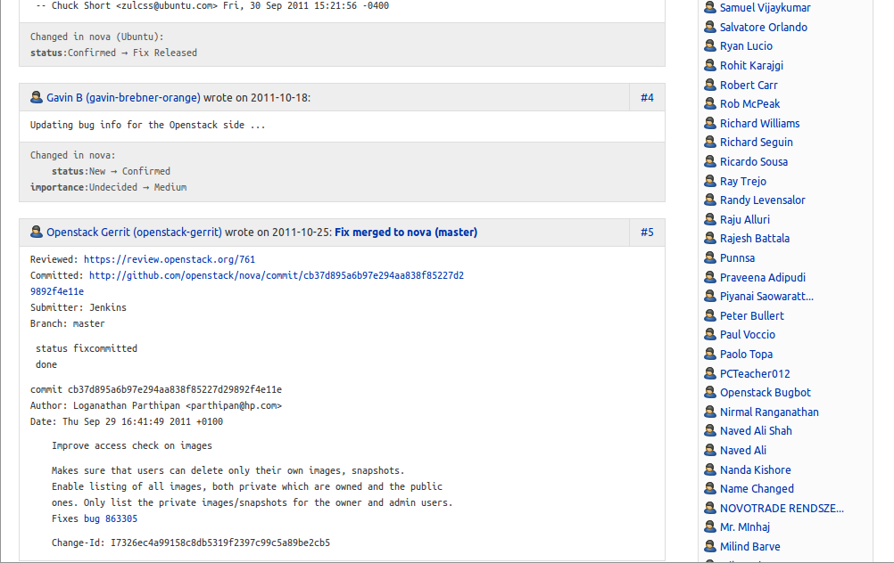
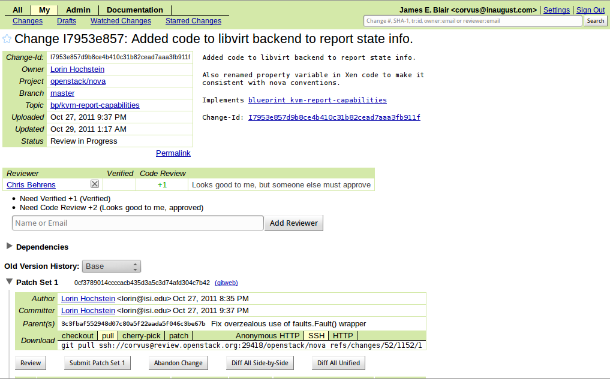
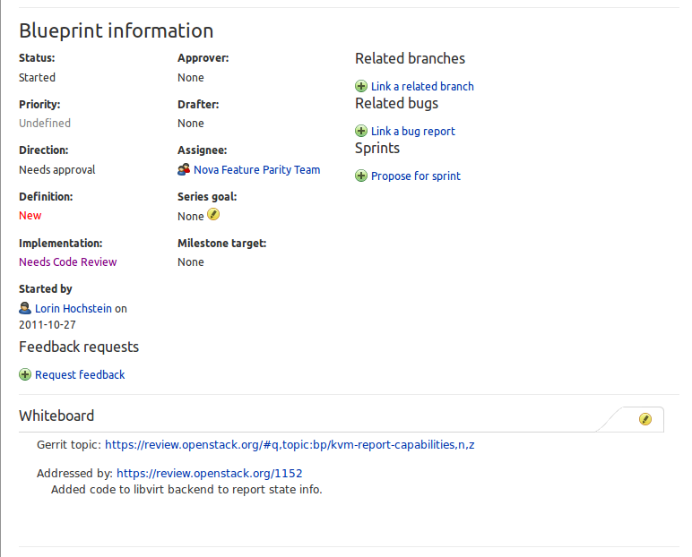
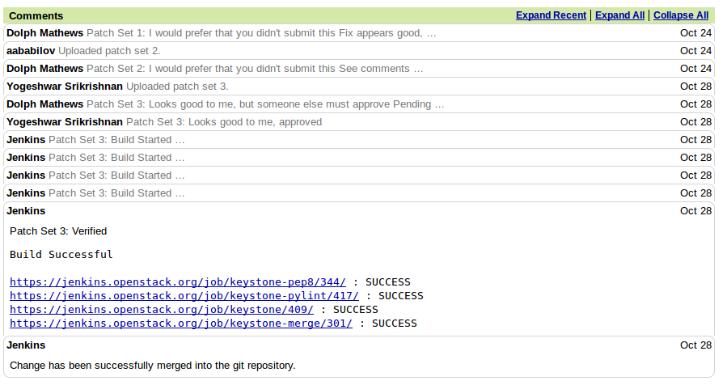

Infrastructure Lineage
- 


OpenStack Gated Trunk

Git Revolt
- Developers wanted to use git
- Launchpad had no git support
- Github has no approval state
Bug Integration - Gerrit

Bug Integration - Launchpad

Blueprints - Gerrit

Blueprints - Launchpad

Blueprints - Gerrit Topics

Launchpad SSO Integration

Gerrit Jenkins Integration

Gerrit Verification State

To Build This Using Launchpad
- Subscribable event triggers
- Verification status in merge requests
- Launchpad API language bindings
While We're at It
- Foreign merge props
- Mirrored branches
- Branch/merge proposal integration with blueprints
- Globally unique blueprint IDs
- Structured Information in blueprints
- Branch link fields supporting arbitrary urls
- First class git support
Thanks!